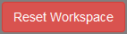
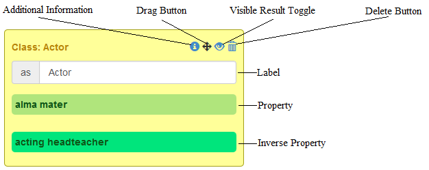
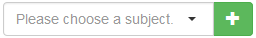
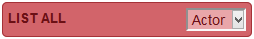
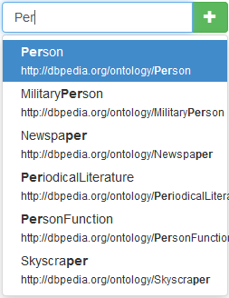
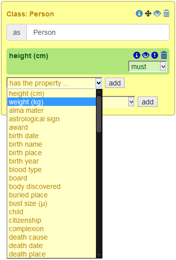
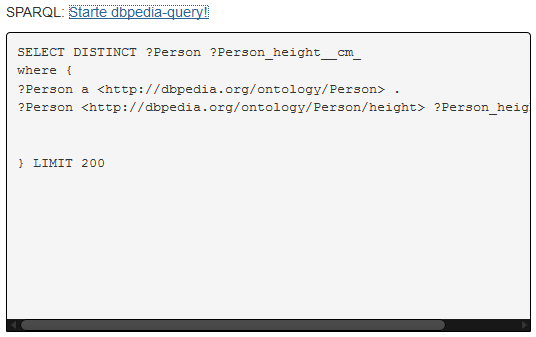

Legende
| Run Query | Die erstellte Anfrage nach SPARQL übersetzen. |
| Reset Workspace | Reset der Arbeitsfläche um von Vorn zu beginnen |
| URIs der Subjekte anzeigen | |
| Open JSON-Query | bereits erstellte Anfragen hochladen |
| Back to Workspace | zur Anfrageerstellung zurückwechseln |
| Download query.json | Herunterladen der erstellten Anfrage als JSON |
Graphical Sparql Builder Benutzerhandbuch
1. GSB Optionsbuttons


Reset Workspace hat die Funktion alle Veränderungen und Einstellungen am Workspace zurückzusetzen, sodass ein einfaches und schnelles Erstellen neuer Queries möglich ist.

2. Beschreibung der Elemente
  Auswahlfenster für Subjects Sortierung der Ergebnisse nach Subject
Label: Befähigt den Benutzer eigens ausgesuchte Namen für Subjects zu verwenden
Property: Mit Properties kann der Nutzer die erlaubten Werte, den Typ und die Relation des Subjects zu anderen Subjects festlegen
Inverse Property: Durch Inverse Properties ist es dem Benutzer möglich Beziehungen zu anderen Subjects invers festzulegen
3. Erstellen einer einfachen Sparql Anfrage
Schritt 1: Subject hinzufügen
Schritt 2: Properties hinzufügen
Schritt 3: "Run Query"
Schritt 4: Starte dbpedia-query!